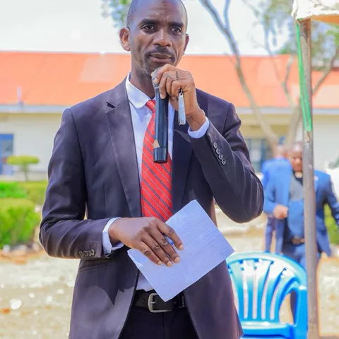
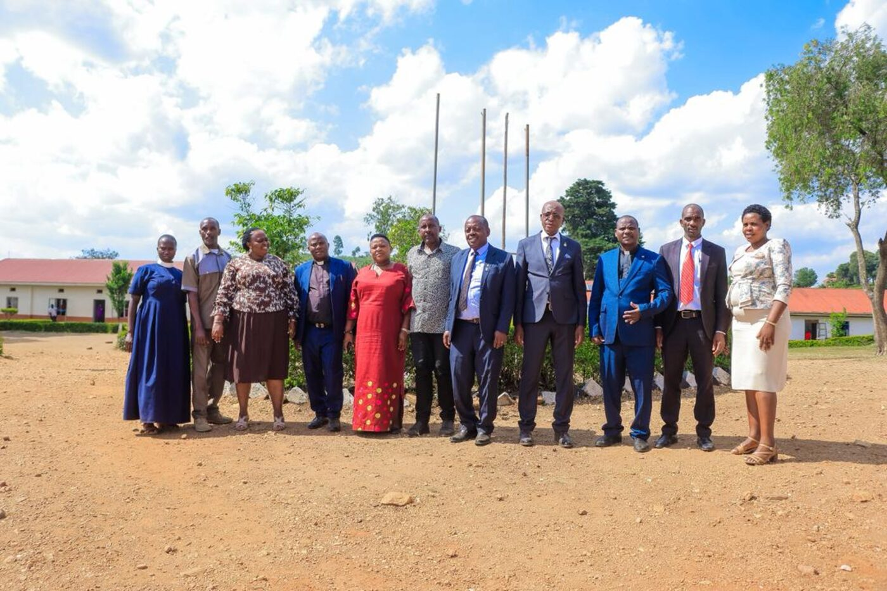

Our Mission
To provide quality education that will enable both boys and girls achieve success in diversity of opportunities and become self reliant.

Over four decades of moulding disciplined, God-fearing and academically excellent young people in Rukungiri District.
Our History
Kashenyi Secondary School was founded in 1981along the Rukungiri–Ishaka Road by community leaders and educators who believed that every child in Rukungiri deserved access to quality secondary education. What began as a humble village school has grown into a respected institution serving hundreds of families across the district and beyond — for over four decades.
Over the years we have expanded from a single block of classrooms to a complete campus with modern laboratories, a library, boarding facilities, sports grounds and dedicated staff quarters — all while holding fast to our motto, "Struggle for Progress".

Our Identity
To provide quality education that will enable both boys and girls achieve success in diversity of opportunities and become self reliant.
Holistic education to all our children.
"Struggle for Progress"— the constant call that drives every learner, teacher and friend of Kashenyi.
Why Choose Us
Motivated, qualified educators committed to the success of every single learner — not just the top of the class.
A God-fearing community where worship, prayer and moral guidance are woven into daily school life.
A close-knit, welcoming family atmosphere where parents, teachers and students work together.
Administration
The team guiding the day-to-day life of the school.

Headteacher
Leads the school with a passion for holistic education, academic excellence and strong moral formation.

Deputy Headteacher
Supports school administration, student welfare and day-to-day discipline with care and firmness.
Deputy Headteacher
Oversees academic programmes and learner support, ensuring every child progresses.

Director of Studies
Coordinates the curriculum, timetables and continuous assessment across all classes.
Director of Studies
Drives examinations, record-keeping and academic guidance for both O-Level and A-Level.

Governance
The school is guided by a dedicated Board of Governors comprising community leaders, educators, parents and church representatives. The Board provides strategic oversight, champions development projects such as the new girls' dormitory, and ensures the school remains true to its motto — "Struggle for Progress".
School Environment
Our campus is a calm, green and secure place to learn — away from the noise, close to nature.


Terraced gardens, shade trees and fresh hill air create a calm atmosphere ideal for study.
Fenced campus, staff supervision and boarding care around the clock.
School farm and gardens supplement meals, teaching learners practical agriculture.
Join Our Family
Whether you are a parent seeking the best for your child or an alumnus wanting to reconnect, we would love to hear from you.